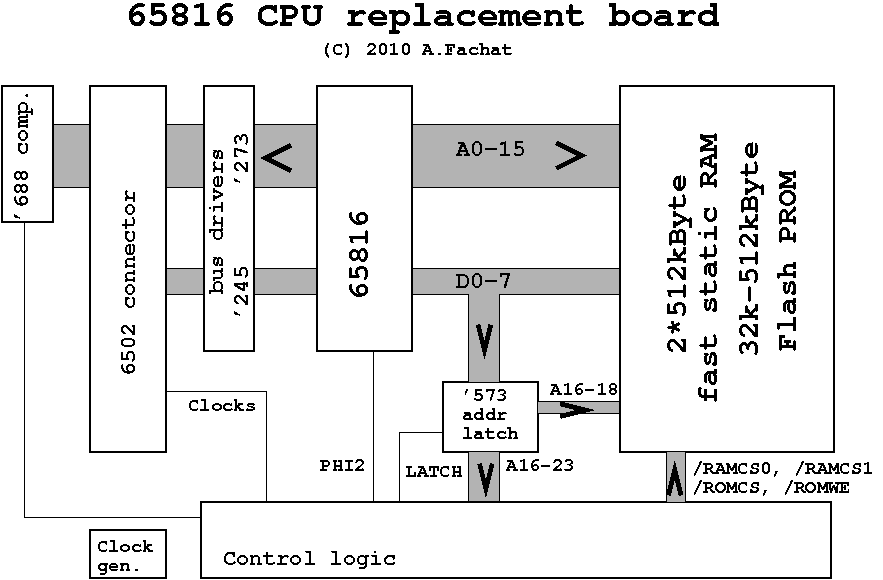

Commodore PET 65816 CPU card
This a PET 65816 CPU card! It speeds up your PET to up to 10MHz. In fact it's a 6502 replacement card and could be used in other 6502-based computers as well. The board uses a 65816 CPU that runs at up to 10MHz, plus a Xilinx CPLD as logic glue. It includes up to 1MByte fast RAM (run at CPU speed) plus up to 512k parallel Flash ROM (in-system programmable), that can be used as boot ROM.
{kind=link}
The board prototype installed in a Commodore 8296 - running a benchmark at 10 MHz!
The interface itself is, in fact, pretty simple. It is a board that is plugged in the 6502 CPU socket of the PET. On the board there is the CPU, the CPLD logic, the new clock generator (50MHz), some few support parts, as well as two 512k static RAM and one 512k Flash RAM chip. The board is all-through-hole - i.e. no SMD parts! I call that a feature in these days.
The prototype has been tested with my CS/A65 computer, in the MMU board - which is easier to handle when you have to change things often. But it also now runs in the CBM8296. Tests with other PETs will follow.
Please also look at these pages:
- Features page
- How it works page.
- Gallery page
News:
- 2010-08-24 New 1.2B version of the board, with board layout, and updated VHDL code. Also added features and how it works page.
- 2010-08-14 New version of the board, now with board layout, and updated VHDL code. Explanations still to come though.
- 2010-04-20 Published the board.
Table of content
Driver
Testsuite
Here are some small tests that test the various features of the board.
Note that building them requires the xa cross assembler, using
the -w switch to enable 65816 code, as well as petcat
from the VICE emulator package to build the BASIC parts.
Here is a description of the different tests (by subdirectory):
- benchmark - builds the
BENCHbenchmark program used to check the speed of the various settings. Builds from theBENCH.basicBASIC source as well asbenchcode.a65andeichcode.a65assembler sources. - eichtest - builds the burn-in test that, at its start, shows how fast the system
actually works (uses screen interrupts to determine system speed, so works
on my 2 MHz PET replica as well. Builds the
LOOPCommodore PET BASIC executable fromLOOP5.basicandeichcode.a65. - maptest - some mapping tests.
COPYcopies 4k data from the system memory mirror at $e0xxxx to bank 0.GOFASTcopies the system from slow memory over to the fast RAM mirror, and switches to it.MAPTESTcompares the slow memory with the system memory mirror at $e0xxxx. - modes - builds the
GOFASTandGOSLOWprograms that move execution to either fast RAM or back into slow memory.GOFASTis updated compared to the maptest version though. - progrom - programs the ROM to run a "GOFAST" functionality directly on reset,
as a boot rom. If you program your on-board ROM with this
PGOFASTcode, and set the bootrom jumper, the system will automatically boot into fast mode.
 |
x816tests-1.0.tgz(Feature test suite) |
VHDL code
This is the VHDL code for the board. It is packaged as the XILINX ISE Webpack (v11.1) directory. Included in this directory is a "testbench" directory with some simulation test runs. Requires Linux with ghdl and GTKWave installed, then look into the Makefile.
Version 1.7.1 just has an updated testsuite.
 |
PET816_1.7.1.tar.bz2(Archive of the XILINX ISE Webpack CPLD logic - includes VHDL source, JED binary file, as well as a testbench. ) |
|
PET816_1.7.tar.bz2(Archive of the XILINX ISE Webpack CPLD logic - includes VHDL source, JED binary file, as well as a testbench. ) |
|
PET816_1.5.tar.bz2(Archive of the XILINX ISE Webpack CPLD logic - includes VHDL source, JED binary file, as well as a testbench. ) |
|
PET816_1.0.tar.bz2(Archive of the XILINX ISE Webpack CPLD logic - includes VHDL source, JED binary file, as well as a testbench. ) |
|
gtkwave.png(Sample screenshot of the timing simulation in the testbench) |
{kind=link}
Board revisions
Version: 1.2b
Status: prototype
Notes
 |
This board is an update on the 1.2A, and only contains a few small changes: Two delay loops that can be used in the VHDL code have been added. Also an "official" diagnostics pin has been added too, to get easy access to a signal "exported" from the CPLD. |
Files
 |
pet_cpu816-v1.2b.sch |
 |
pet_cpu816-v1.2b.brd |
|
pet_cpu816-v1.2b-sch.png |
|
pet_cpu816-v1.2b-brd.png |
{kind=link}
{kind=link}
Version: 1.2a
Status: prototype
Notes
|
This board has been only barely tested |
Files
|
pet_cpu816-v1.2a.sch |
|
pet_cpu816-v1.2a.brd |
|
pet_cpu816-v1.2a-sch.png |
|
pet_cpu816-v1.2a-brd.png |
{kind=link}
{kind=link}
Version: 1.0b
Status: prototype
Notes
|
This board has been only barely tested |
Files
|
pet_cpu816-v1.0b.sch |
|
pet_cpu816-v1.0b-sch.png |
{kind=link}
Block diagram
Block diagram of the board. Only the main parts are shown.